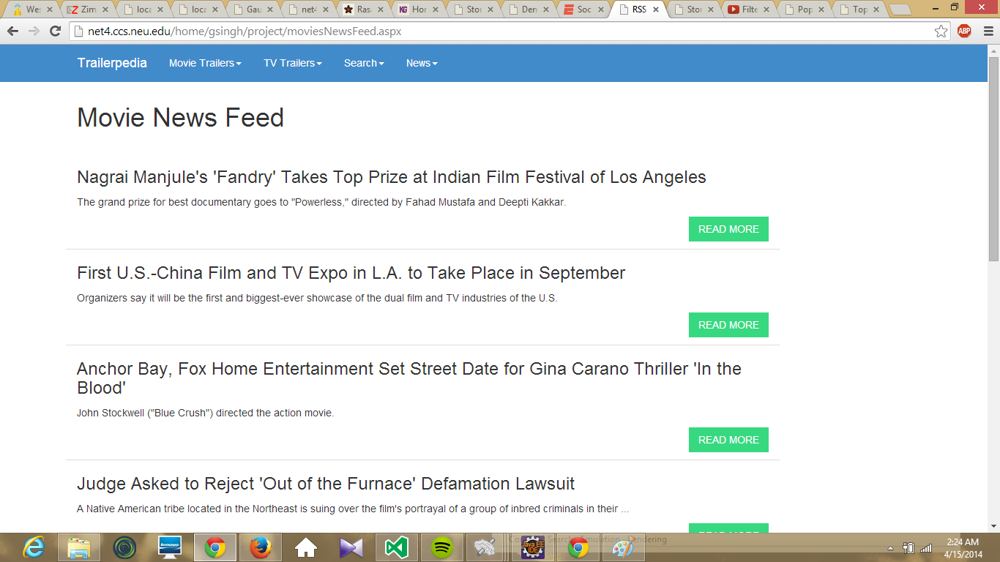

Movie News Feed Page
The page displays top 10 news from the Hollywood reporter rss feeds site. I basically use the google js api to achieve this. The cloning procedure is same as the previous pages.

Note that in the above screen shot I have a Read More Button that allows me actually read the news on the hollywood reporter website.